e-mail: post4inet@gmail.com |
| акселерометры | - обзор предлагаемых устройств |
| прецизионный акселерометр |
-
измерение малых ускорений,
-
широкий динамический диапазон
|
| акселерометр Bluetooth | ВИДЕО Акселерометр Bluetooth -график в реальном времени |
| акселерометр USB | ВИДЕО 1 Измерения
акселерометром
USB с памятью =================== ВИДЕО 2 Синхронная запись ДВУМЯ акселерометрами USB |
| акселерометр RS-485 | ВИДЕО Измерения акселерометром RS-485 |
| акселерометры с аналоговыми выходами | |
| Ударные испытания транспорта | ВИДЕО Испытания ж/д цистерны на удар |
| Ударные испытания оборудования | ВИДЕО Испытания велосипедных шлемов на удар |
| Программное обеспечение |
| Параметры акселерометров |
| Применение акселерометров |
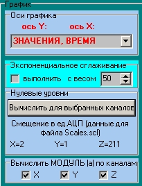
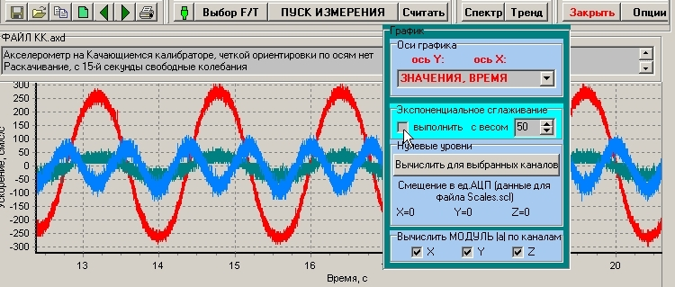
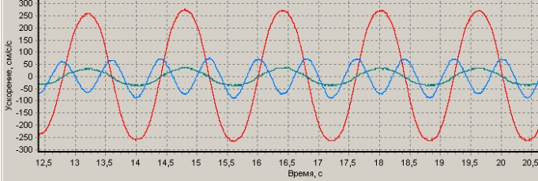
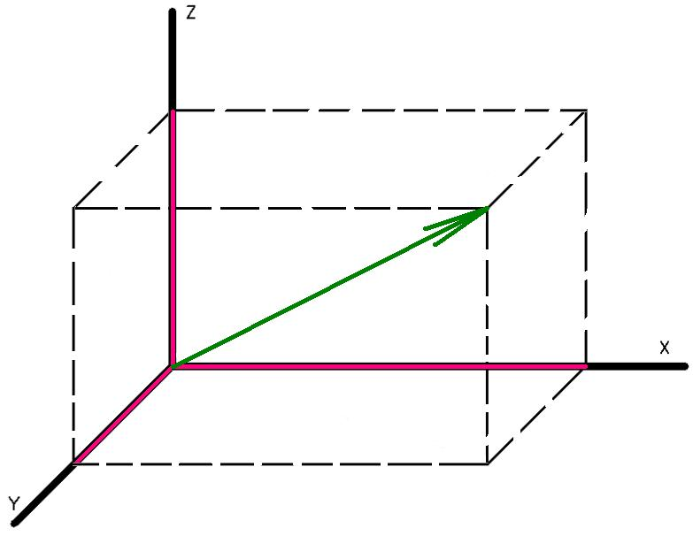
Сигналы в каналах x, y, z трехосевого акселерометра пропорциональны проекциям вектора ускорения на оси X, Y, Z,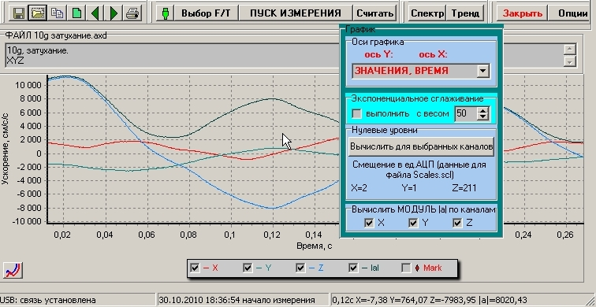
На графике цветными линиями отображаются ускорения по осям X, Y, Z, черной линией - модуль ускорения.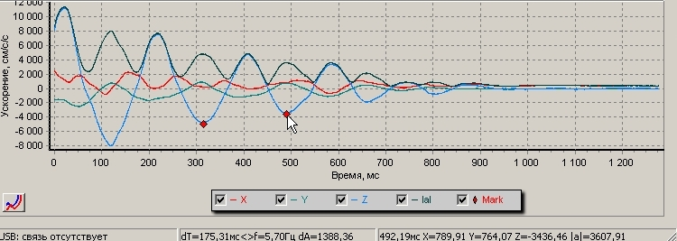
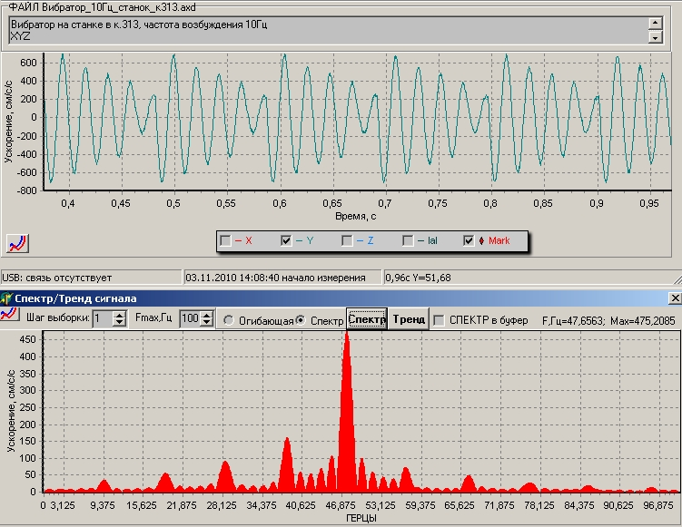
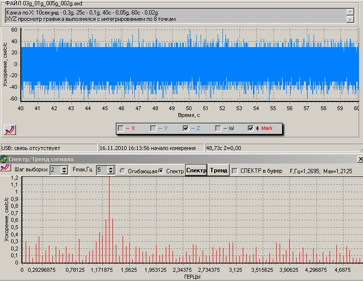
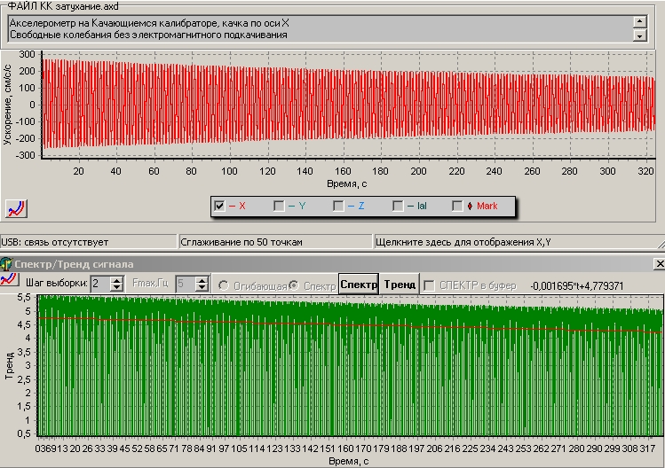
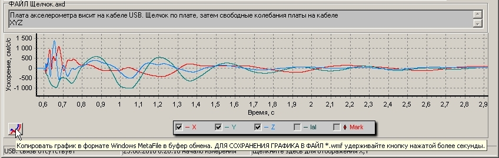
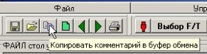
При нажатии кнопки копирования комментария, в буфере сохраняется текст комментария и информация о файле данных - имя файла, время создания, путь к нему. Эта информаци также может быть вставлена в документ MS Word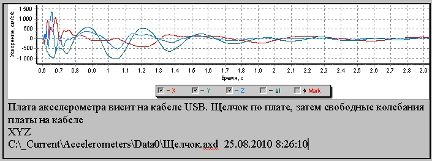
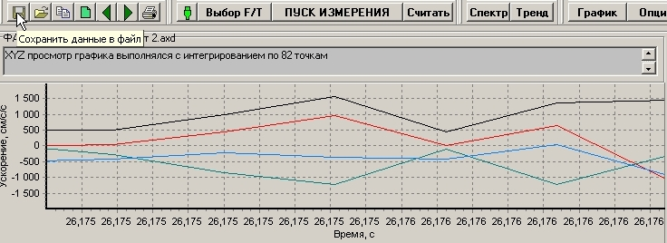
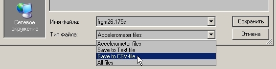
В открывшемся окне "Сохранить файл" введите Имя файла и выберите формат сохраняемого файла.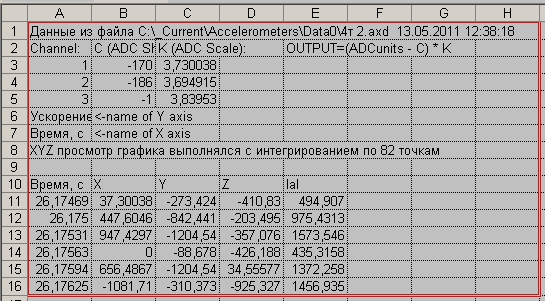
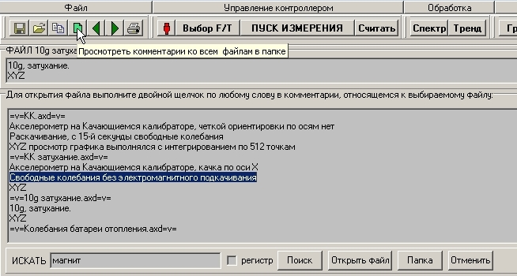